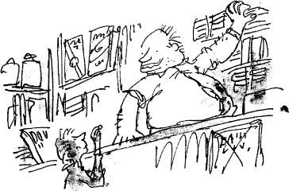

Charlie entered the shop and laid the damp fifty pence on the counter.
‘One Wonka’s Whipple-Scrumptious Fudge-mallow Delight,’ he said, remembering how much he had loved the one he had on his birthday.
The man behind the counter looked fat and well-fed. He had big lips and fat cheeks and a very fat neck. The fat around his neck bulged out all around the top of his collar like a rubber ring. He turned and reached behind him for the chocolate bar, then he turned back again and handed it to Charlie. Charlie grabbed it and quickly tore off the wrapper and took an enormous bite. Then he took another… and another… and oh, the joy of being able to cram large pieces of something sweet and solid into one’s mouth! The sheer blissful joy of being able to fill one’s mouth with rich solid food!
‘You look like you wanted that one, sonny,’ the shopkeeper said pleasantly.
Charlie nodded, his mouth bulging with chocolate.
The shopkeeper put Charlie’s change on the counter. ‘Take it easy,’ he said. ‘It’ll give you a tummy-ache if you swallow it like that without chewing.’
Charlie went on wolfing the chocolate. He couldn’t stop. And in less than half a minute, the whole thing had disappeared down his throat. He was quite out of breath, but he felt marvellously, extraordinarily happy. He reached out a hand to take the change. Then he paused. His eyes were just above the level of the counter. They were staring at the silver coins lying there. The coins were all five-penny pieces. There were nine of them altogether. Surely it wouldn’t matter if he spent just one more…
‘I think,’ he said quietly, ‘I think… I’ll have just one more of those chocolate bars. The same kind as before, please.’
‘Why not?’ the fat shopkeeper said, reaching behind him again and taking another Whipple-Scrumptious Fudgemallow Delight from the shelf. He laid it on the counter.
Charlie picked it up and tore off the wrapper… and suddenly… from underneath the wrapper… there came a brilliant flash of gold.
Charlie’s heart stood still.
‘It’s a Golden Ticket!’ screamed the shopkeeper, leaping about a foot in the air. ‘You’ve got a Golden Ticket! You’ve found the last Golden Ticket! Hey, would you believe it! Come and look at this, everybody! The kid’s found Wonka’s last Golden Ticket! There it is! It’s right here in his hands!’
It seemed as though the shopkeeper might be going to have a fit. ‘In my shop, too!’ he yelled. ‘He found it right here in my own little shop! Somebody call the newspapers quick and let them know! Watch out now, sonny! Don’t tear it as you unwrap it! That thing’s precious!’
In a few seconds, there was a crowd of about twenty people clustering around Charlie, and many more were pushing their way in from the street. Everybody wanted to get a look at the Golden Ticket and at the lucky finder.
‘Where is it?’ somebody shouted. ‘Hold it up so all of us can see it!’
‘There it is, there!’ someone else shouted. ‘He’s holding it in his hands! See the gold shining!’
‘How did he manage to find it, I’d like to know?’ a large boy shouted angrily. ‘Twenty bars a day I’ve been buying for weeks and weeks!’
‘Think of all the free stuff he’ll be getting too!’ another boy said enviously. ‘A lifetime supply!’
‘He’ll need it, the skinny little shrimp!’ a girl said, laughing.
Charlie hadn’t moved. He hadn’t even unwrapped the Golden Ticket from around the chocolate. He was standing very still, holding it tightly with both hands while the crowd pushed and shouted all around him. He felt quite dizzy. There was a peculiar floating sensation coming over him, as though he were floating up in the air like a balloon. His feet didn’t seem to be touching the ground at all. He could hear his heart thumping away loudly somewhere in his throat.
At that point, he became aware of a hand resting lightly on his shoulder, and when he looked up, he saw a tall man standing over him. ‘Listen,’ the man whispered. ‘I’ll buy it from you. I’ll give you fifty pounds. How about it, eh? And I’ll give you a new bicycle as well. Okay?’
‘Are you crazy?’ shouted a woman who was standing equally close. ‘Why, I’d give him two hundred pounds for that ticket! You want to sell that ticket for two hundred pounds, young man?’
‘That’s quite enough of that!’ the fat shopkeeper shouted, pushing his way through the crowd and taking Charlie firmly by the arm. ‘Leave the kid alone, will you! Make way there! Let him out!’ And to Charlie, as he led him to the door, he whispered, ‘Don’t you let anybody have it! Take it straight home, quickly, before you lose it! Run all the way and don’t stop till you get there, you understand?’
Charlie nodded.
‘You know something,’ the fat shopkeeper said, pausing a moment and smiling at Charlie, ‘I have a feeling you needed a break like this. I’m awfully glad you got it. Good luck to you, sonny.’
‘Thank you,’ Charlie said, and off he went, running through the snow as fast as his legs would go. And as he flew past Mr Willy Wonka’s factory, he turned and waved at it and sang out, ‘I’ll be seeing you! I’ll be seeing you soon!’ And five minutes later he arrived at his own home.